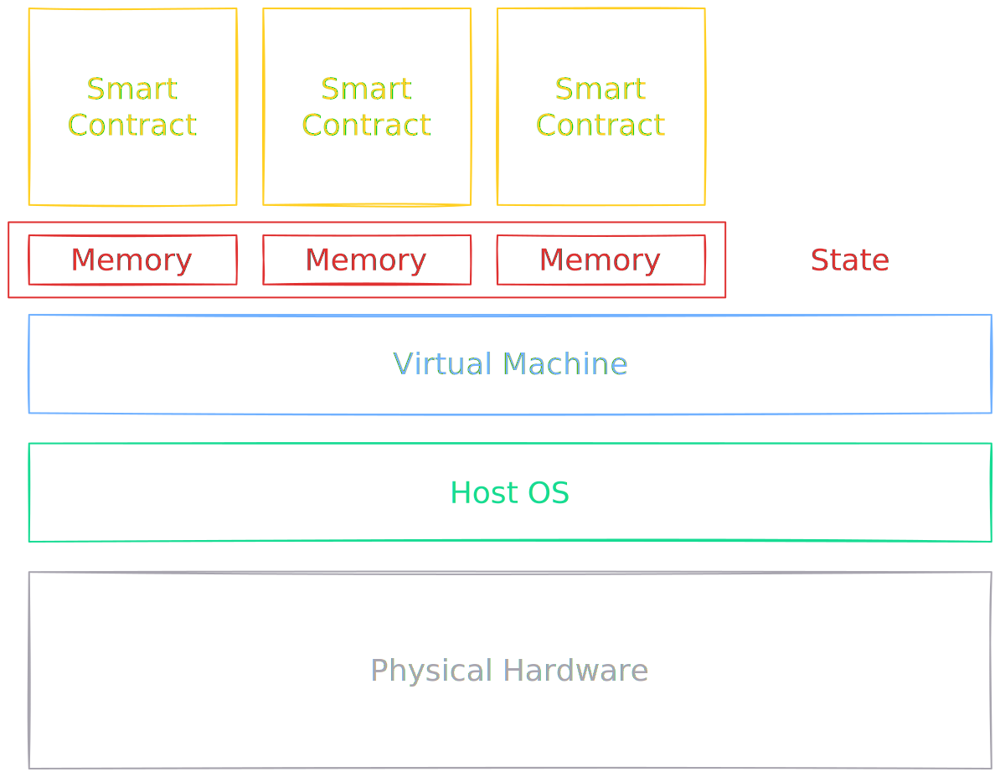

Fault-Driven Memory Tracking
Segfaults ain't all bad
Virtual Machine
Virtual Machine

Virtual Machine

Virtual Machine



Memory Tracking
mmap(), munmap()
map or unmap files or devices into memory
#include <sys/mman.h>
void *mmap(void addr[.length], size_t length, int prot,
int flags, int fd, off_t offset);
int munmap(void addr[.length], size_t length);
Use of a mapped region can result in these signals:
SIGSEGV
Attempted to write to a region mapped as read-only.
SIGBUS
Attempted access to a page of the buffer that lies beyond the end of the mapped file.
sigaction()
examine and change a signal action
#include <signal.h>
int sigaction(
int signum,
const struct sigaction *_Nullable restrict act,
struct sigaction *_Nullable restrict oldact
);
mprotect()
set protection on a region of memory
#include <sys/mman.h>
int mprotect(void addr[.len], size_t len, int prot);
Memory Tracking
Strategy
- Map memory region as read-only
- Catch write using SIGSEGV handler
- Mark memory region as written
- Allow writing to the memory region